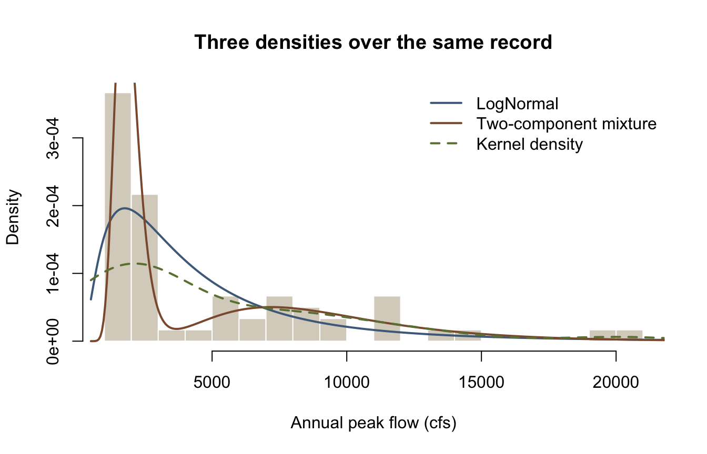

library(corehydror)27. Composite distributions
Most of the distribution surface takes a family name and a parameter vector. Five families do not, because they are built out of other distributions or out of the data itself: a truncated distribution, a mixture, a competing-risks system, an empirical curve, and a kernel density. corehydror calls them composite, and each has its own constructor: dist_truncated(), dist_mixture(), dist_competing_risks(), dist_empirical(), and dist_kde(). What comes back is an ordinary corehydro_dist: the density, distribution, quantile, random-draw, moment, parameter, and log-likelihood verbs all take one.
This example uses three of them on one record: a mixture for a basin with two flood-generating mechanisms, a kernel density as a nonparametric reference, and a truncated distribution for a physical lower bound.
What you’ll learn
- Fit a two-component mixture with
model_mixture()andfit_mle(), then rebuild the fit as a standalonedist_mixture()distribution. - See where a second component changes the frequency curve, and where it does not.
- Build a kernel density, reproduce its default bandwidth, and understand what
bounded_by_datadoes and does not restrict. - Renormalize a distribution onto a physical range with
dist_truncated(). - Know the two things composites cannot do.
Setup
A mixed-population record
Sixty annual peak flows from a basin with two flood seasons: spring snowmelt produces a cluster of moderate peaks, and summer convective storms produce a smaller number of much larger ones. The record is written out here so the page is self-contained and both languages read the same numbers.
peaks <- c(
1240, 8720, 2110, 1240, 11180, 1570, 11620, 4470, 6470, 1960,
1740, 3530, 7440, 9080, 1500, 5760, 7920, 2480, 1790, 2650,
1740, 1590, 2080, 2220, 1800, 2120, 11430, 8710, 19870, 1570,
1540, 5290, 1480, 7750, 1900, 5630, 1910, 20340, 1280, 9270,
5720, 1390, 14490, 2180, 1590, 1530, 6540, 2470, 2490, 7780,
13010, 2140, 1220, 11790, 2820, 2000, 2390, 1440, 8740, 2470
)
n <- length(peaks)
cat(sprintf("n = %d, range %s to %s cfs\n", n,
format(min(peaks), big.mark = ","), format(max(peaks), big.mark = ",")))n = 60, range 1,220 to 20,340 cfsOne distribution, or two?
model_mixture() builds a weighted mixture model, and fit_mle() fits it the same way it fits any other model. The single-family fit is the comparison.
single_fit <- fit_mle(model_univariate("LogNormal", peaks))
mix_fit <- fit_mle(model_mixture(c("LogNormal", "LogNormal"), peaks))
round(coef(mix_fit), 4)Weight (w₁) Weight (w₂) D1 D1 D2 D2
0.4129 0.5871 3.9323 0.1814 3.2639 0.1046 The parameter vector is the mixture weights first, then each component’s own parameters in order, which is exactly how the core lays a mixture’s parameters out.
p <- unname(coef(mix_fit))
components <- list(distribution("LogNormal", p[3:4]), distribution("LogNormal", p[5:6]))
for (i in 1:2) {
cat(sprintf("component %d: weight %.4f, median %s cfs\n", i, p[i],
format(round(dist_quantile(components[[i]], 0.5)), big.mark = ",")))
}component 1: weight 0.4129, median 8,557 cfs
component 2: weight 0.5871, median 1,836 cfsTwo seasons, recovered from the record alone: a wide component centered near 8,557 cfs carrying weight 0.4129, and a narrow one centered near 1,836 cfs carrying the rest.
gof <- data.frame(
parameters = c(length(coef(single_fit)), length(coef(mix_fit))),
log_likelihood = c(logLik(single_fit), logLik(mix_fit)),
aic = c(single_fit$aic, mix_fit$aic),
bic = c(single_fit$bic, mix_fit$bic),
row.names = c("LogNormal", "Two-component mixture")
)
round(gof, 3) parameters log_likelihood aic bic
LogNormal 2 -562.620 1129.239 1133.428
Two-component mixture 6 -541.624 1095.249 1107.815The mixture costs four extra parameters, and both criteria still prefer it: its AIC and its BIC are lower than the single fit’s. A single lognormal cannot be both narrow enough for the snowmelt cluster and wide enough for the storm peaks.
Rebuilding the fit as a distribution
fit_mle() returns a fit, not a distribution. dist_mixture() turns the fitted numbers back into a corehydro_dist the dist_*() verbs accept, and the log-likelihood of that composite over the same record reproduces the fit’s own value exactly.
mixture <- dist_mixture(components = components, weights = p[1:2])
single <- distribution("LogNormal", unname(coef(single_fit)))
mixture<corehydro_dist> Mixture (composite)
{"family":"Mixture","components":[{"family":"LogNormal","parameters":[3.93234...cat(sprintf("log-likelihood: %.10f from dist_mixture(), %.10f from the fit\n",
dist_log_likelihood(mixture, peaks), logLik(mix_fit)))log-likelihood: -541.6244186353 from dist_mixture(), -541.6244186353 from the fitWhere the second component changes the answer
aeps <- c(0.5, 0.1, 0.01, 0.002)
quantiles <- data.frame(
single = dist_quantile(single, 1 - aeps),
mixture = dist_quantile(mixture, 1 - aeps),
row.names = paste0(100 * aeps, "% AEP")
)
quantiles$ratio <- quantiles$mixture / quantiles$single
round(quantiles, 3) single mixture ratio
50% AEP 3465.790 2359.245 0.681
10% AEP 9974.785 11461.031 1.149
1% AEP 23615.112 19517.846 0.826
0.2% AEP 37228.118 25218.021 0.677The mixture is not uniformly heavier. It raises the 10% quantile from 9,975 to 11,461 cfs, because the storm component puts real probability where a single lognormal had a thin shoulder. It then lowers the 1% and 0.2% quantiles, because each component has its own scale and neither is as diffuse as the single fit forced to straddle both clusters. Splitting a bimodal record into two components is not the same as making its tail heavier.
round(rbind(single = dist_moments(single), mixture = dist_moments(mixture)), 3) mean median mode sd skewness kurtosis minimum maximum
single 4870.273 3465.790 3465.790 4808.281 3.924 39.305 0 Inf
mixture 4965.313 2359.245 7186.722 4520.883 1.574 5.837 0 InfThe moments say the same thing. The two distributions have nearly the same mean, but the mixture’s standard deviation, skewness, and kurtosis are all smaller and its median is far lower. Read the mixture’s reported mode with care: the core finds it by maximizing the density with a Brent search over the interval between the 0.1% and 99.9% quantiles, which on a two-humped density converges to whichever hump the search lands in.
A kernel density as a nonparametric reference
dist_kde() builds a density by summing a kernel centered at each observation. With no bandwidth supplied it uses the rule h = s * (4 / (3n))^(1/5), where s is the sample standard deviation. Passing that value explicitly reproduces the default exactly.
h <- sd(peaks) * (4 / (3 * n))^(1 / 5)
kde <- dist_kde(peaks)
cat(sprintf("bandwidth %.6f; explicit bandwidth reproduces the default: %s\n",
h, identical(dist_quantile(kde, 0.9), dist_quantile(dist_kde(peaks, bandwidth = h), 0.9))))bandwidth 2143.864822; explicit bandwidth reproduces the default: TRUEgrid <- seq(500, 24000, length.out = 400)
hist(peaks,
breaks = 20, freq = FALSE, border = "white", col = "#d9d2c5",
xlab = "Annual peak flow (cfs)", main = "Three densities over the same record"
)
lines(grid, dist_pdf(single, grid), lwd = 2, col = "#4d6b8a")
lines(grid, dist_pdf(mixture, grid), lwd = 2, col = "#8c5a3b")
lines(grid, dist_pdf(kde, grid), lwd = 2, lty = 2, col = "#6b7f3f")
legend("topright",
legend = c("LogNormal", "Two-component mixture", "Kernel density"),
col = c("#4d6b8a", "#8c5a3b", "#6b7f3f"), lwd = 2, lty = c(1, 1, 2), bty = "n"
)
bounded_by_data, on by default, sets the distribution’s reported minimum and maximum to the smallest and largest observation instead of extending three bandwidths past each. That gates the CDF and the quantile function, which cannot then return a value outside the observed range. It does not gate the density: the kernel sum is evaluated wherever you ask.
kde_open <- dist_kde(peaks, bounded_by_data = FALSE)
cat(sprintf("largest observation %s\n", format(max(peaks), big.mark = ",")))largest observation 20,340cat(sprintf("0.2%% AEP quantile, bounded %.1f\n", dist_quantile(kde, 0.998)))0.2% AEP quantile, bounded 20088.4cat(sprintf("0.2%% AEP quantile, unbounded %.1f\n", dist_quantile(kde_open, 0.998)))0.2% AEP quantile, unbounded 23424.8cat(sprintf("density at 30,000 cfs identical either way: %s\n",
dist_pdf(kde, 30000) == dist_pdf(kde_open, 30000)))density at 30,000 cfs identical either way: TRUEThat is the honest limit of a kernel density for design work. With bounded_by_data left on it describes the record it was built from and will not return a quantile past it, which is exactly why the parametric fits above still have a job. Turned off, the support runs three bandwidths beyond the largest observation, and the 0.2% AEP quantile lands at 23,424.8 cfs against a record maximum of 20,340.
round(data.frame(
single = dist_quantile(single, 1 - aeps),
mixture = dist_quantile(mixture, 1 - aeps),
kde = dist_quantile(kde, 1 - aeps),
row.names = paste0(100 * aeps, "% AEP")
), 1) single mixture kde
50% AEP 3465.8 2359.2 5011.0
10% AEP 9974.8 11461.0 12151.2
1% AEP 23615.1 19517.8 19109.9
0.2% AEP 37228.1 25218.0 20088.4A physical lower bound
Suppose a downstream diversion guarantees that at least 1,000 cfs passes the gauge in any year, so an annual maximum below that is impossible. The fitted lognormal does not know this.
cat(sprintf("P(annual peak < 1,000 cfs) under the fitted LogNormal: %.4f\n",
dist_cdf(single, 1000)))P(annual peak < 1,000 cfs) under the fitted LogNormal: 0.0659dist_truncated() restricts a distribution to [min, max] and renormalizes: the density becomes the base density divided by F(max) - F(min), zero outside the bounds, and the CDF becomes (F(x) - F(min)) / (F(max) - F(min)).
truncated <- dist_truncated(single, min = 1000, max = 1e6)
cat(sprintf("CDF at the lower bound: %.1f\n", dist_cdf(truncated, 1000)))CDF at the lower bound: 0.0cat(sprintf("density ratio at 5,000 cfs: %.10f\n",
dist_pdf(truncated, 5000) / dist_pdf(single, 5000)))density ratio at 5,000 cfs: 1.0705813468cat(sprintf("1 / (F(max) - F(min)): %.10f\n",
1 / (dist_cdf(single, 1e6) - dist_cdf(single, 1000))))1 / (F(max) - F(min)): 1.0705813468Removing the impossible lower tail pushes every quantile up, and the proportional shift shrinks as the quantile rises: 1.0706 at the median against 1.0178 at the 0.2% AEP quantile, the part of the curve a design study reads.
shifted <- data.frame(
base = dist_quantile(single, 1 - aeps),
truncated = dist_quantile(truncated, 1 - aeps),
row.names = paste0(100 * aeps, "% AEP")
)
shifted$ratio <- shifted$truncated / shifted$base
round(shifted, 4) base truncated ratio
50% AEP 3465.789 3710.536 1.0706
10% AEP 9974.785 10296.732 1.0323
1% AEP 23615.112 24116.694 1.0212
0.2% AEP 37228.118 37892.583 1.0178What composites cannot do
Two things. First, none of the five implements linear moments upstream, so dist_lmoments() declines rather than approximating.
cat(tryCatch(dist_lmoments(mixture), error = conditionMessage), "\n")linear moments are not available for 'Mixture'; no composite distribution implements ILinearMomentEstimation upstream Second, a composite has no flat parameter vector, so distribution() will not build one and there is no dist_fit() path to a composite family. Mixtures are fitted through model_mixture() and an estimator, as above; competing-risks systems through model_competing_risks().
cat(tryCatch(distribution("Mixture", c(0.5, 0.5)), error = conditionMessage), "\n")'Mixture' has no flat parameter vector; use dist_mixture() instead cat(tryCatch(distribution("KernelDensity", 1), error = conditionMessage), "\n")'KernelDensity' has no flat parameter vector; use dist_kde() instead distribution_names("structured")[1] "TruncatedDistribution" "Mixture" "CompetingRisks"
[4] "Empirical" "KernelDensity" Reproduction check
# Every fit on this page is deterministic (maximum likelihood by a deterministic optimizer; the
# kernel density and the truncation are closed-form), so these literals are what this port
# computes and what the Python notebook asserts -- which is what proves the cross-language
# identity. The comparisons carry a 1e-15 relative tolerance only because R's decimal parser can
# land one ulp away from the written literal; the fixture suite is what enforces bit-exactness.
near <- \(x, literal) abs(x / literal - 1) < 1e-15
stopifnot(
# The two maximum-likelihood fits.
near(coef(single_fit)[1], 3.5398021872265386),
near(coef(single_fit)[2], 0.35823869011128351),
near(logLik(single_fit), -562.61957474501503),
near(coef(mix_fit)[1], 0.41289769144404032),
near(coef(mix_fit)[2], 0.58710230855595968),
near(coef(mix_fit)[3], 3.9323412160584628),
near(coef(mix_fit)[4], 0.18144915787795951),
near(coef(mix_fit)[5], 3.2639016318942939),
near(coef(mix_fit)[6], 0.10464430806060765),
near(logLik(mix_fit), -541.62441863534707),
near(gof["LogNormal", "aic"], 1129.2391494900301),
near(gof["Two-component mixture", "aic"], 1095.2488372706941),
near(gof["LogNormal", "bic"], 1133.4278386144742),
near(gof["Two-component mixture", "bic"], 1107.8149046440267),
# The composite rebuilt from the fitted values.
dist_log_likelihood(mixture, peaks) == logLik(mix_fit),
# Quantiles: the mixture is higher at 10% and lower at 1% and 0.2%.
near(quantiles$single[2], 9974.7849506787734),
near(quantiles$mixture[2], 11461.031257850214),
near(quantiles$single[3], 23615.111603538928),
near(quantiles$mixture[3], 19517.845994674906),
near(quantiles$single[4], 37228.117722712399),
near(quantiles$mixture[4], 25218.020604342844),
near(dist_moments(mixture)[["skewness"]], 1.5738083017829989),
near(dist_moments(single)[["skewness"]], 3.9241120906543738),
# The kernel density.
near(h, 2143.864821560871),
identical(dist_quantile(kde, 0.9), dist_quantile(dist_kde(peaks, bandwidth = h), 0.9)),
near(dist_quantile(kde, 0.9), 12151.217810408163),
near(dist_quantile(kde, 0.998), 20088.429334855526),
near(dist_quantile(kde_open, 0.998), 23424.805148963263),
dist_pdf(kde, 30000) == dist_pdf(kde_open, 30000),
# The truncated distribution.
near(dist_cdf(single, 1000), 0.065928055787046747),
dist_cdf(truncated, 1000) == 0,
near(dist_quantile(truncated, 0.5), 3710.536428782953),
near(dist_quantile(truncated, 0.99), 24116.69387849512),
near(dist_pdf(truncated, 5000) / dist_pdf(single, 5000), 1.0705813467570697)
)
# Internal consistency: the truncation identities the core documents, the bounded kernel density
# refusing to leave the observed range, and the mixture beating the single fit on both criteria.
stopifnot(
abs(dist_pdf(truncated, 5000) / dist_pdf(single, 5000) -
1 / (dist_cdf(single, 1e6) - dist_cdf(single, 1000))) < 1e-12,
dist_pdf(truncated, 500) == 0,
dist_quantile(kde, 0.998) < max(peaks),
dist_quantile(kde_open, 0.998) > max(peaks),
mix_fit$aic < single_fit$aic, mix_fit$bic < single_fit$bic,
all(shifted$ratio > 1), all(diff(shifted$ratio) < 0),
abs(sum(p[1:2]) - 1) < 1e-12
)
cat("All reproduction checks passed.\n")All reproduction checks passed.